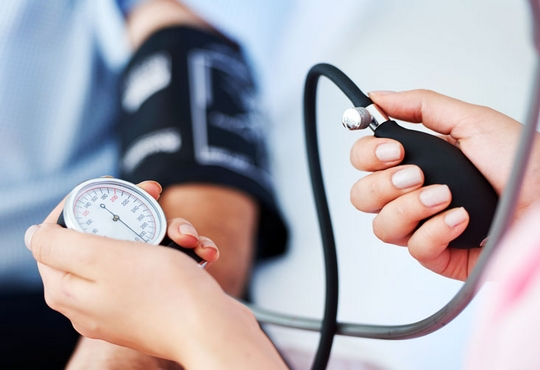
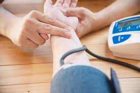
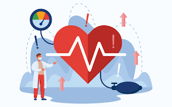

Definition:
High blood pressure, also known as hypertension, is a common condition that affects the arteries of the body. When someone has high blood pressure, the force of blood pushing against the artery walls is consistently high, making the heart work harder to pump blood.

Types of High Blood Pressure:
- Normal blood pressure: Less than 120/80 mmHg
- Mild high blood pressure: Top number between 120-129 mmHg and bottom number less than 80 mmHg
- Stage 1 hypertension: Top number between 130-139 mmHg or bottom number between 80-89 mmHg
- Stage 2 hypertension: Top number 140 mmHg or higher or bottom number 90 mmHg or higher

Measurement Unit:
Blood pressure is measured in millimeters of mercury (mmHg). Generally, high blood pressure is considered when blood pressure readings are 130/80 mmHg or higher.
Risk Factors:
- Age
- Ethnic background
- Family history
- Obesity
- Lack of exercise
- Tobacco and alcohol use
- High salt intake
- Stress

Prevention:
A healthy lifestyle is one of the most important ways to prevent and control high blood pressure, including:
- Regular physical activity
- Maintaining a healthy weight
- Following a healthy diet
- Managing stress
- Avoiding smoking and excessive alcohol consumption
- Reducing caffeine intake